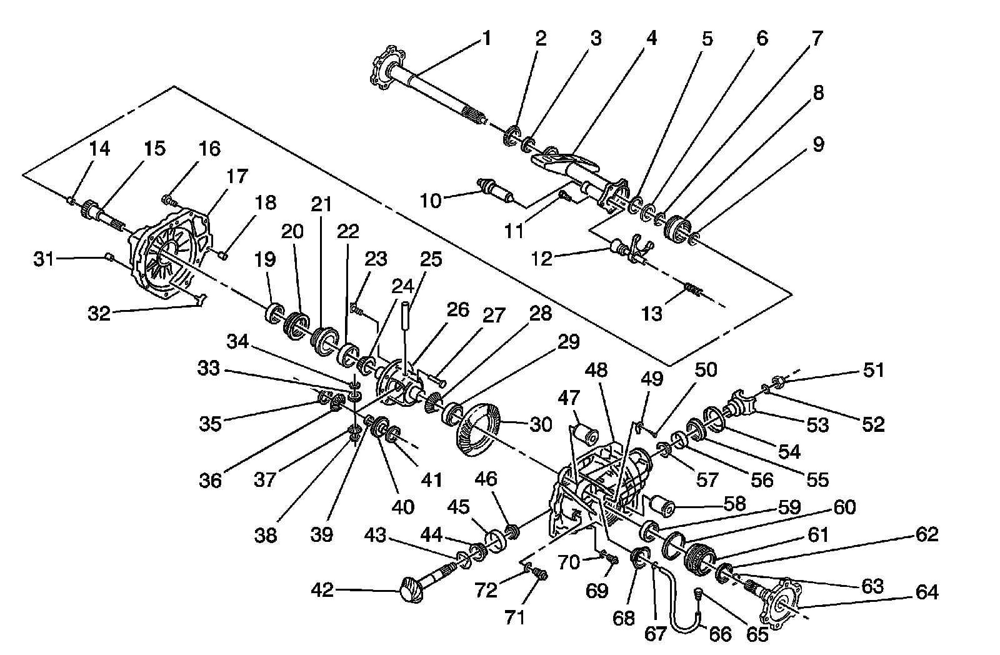

Front Drive Axle Disassembled Views (9.25 Inch)
Front Drive Axle Disassembled Views (9.25 Inch)
Front Drive Axle (9.25 inch)
Front Drive Axle (9.25 inch):

1 - Front Drive Axle Inner Shaft
2 - Front Drive Axle Inner Shaft Seal
3 - Front Drive Axle Inner Axle Shaft Bearing
4 - Front Drive Axle Inner Shaft Housing
5 - Front Drive Axle Clutch Gear Thrust Washer
6 - Front Drive Axle Clutch Gear
7 - Front Drive Axle Inner Shaft Retaining Ring
8 - Front Drive Axle Clutch Sleeve
9 - Front Drive Axle Clutch Shim
10 - Front Drive Axle Actuator
11 - Front Drive Axle Inner Shaft Housing Bolt
12 - Front Drive Axle Clutch Fork Assembly
13 - Front Drive Axle Clutch Fork Inner Spring
14 - Front Drive Axle Clutch Shaft Bearing
15 - Front Drive Axle Clutch Shaft
16 - Front Differential Carrier Bolt
17 - Front Differential Carrier
18 - Front Differential Carrier Half Location Pin
19 - Front Differential Case Bearing
20 - Front Differential Bearing Adjuster Nut
21 - Front Differential Bearing Adjuster Nut Sleeve
22 - Front Differential Side Bearing Cup
23 - Differential Ring Gear Bolt
24 - Front Differential Side Bearing
25 - Front Differential Pinion Gear Shaft
26 - Front Differential Case
27 - Differential Pinion Gear Shaft Lock Bolt
28 - Differential Side Bearing
29 - Differential Side Bearing Cup
30 - Front Differential Ring Gear
31 - Front Differential Half Carrier Location Pin
32 - Front Differential Bearing Adjuster Nut Lock
33 - Differential Pinion Gear
34 - Differential Pinion Gear Thrust Washer
35 - Differential Side Gear Thrust Washer
36 - Differential Side Gear
37 - Differential Pinion Gear
38 - Differential Pinion Gear Thrust Washer
39 - Front Differential Side Gear Spacer
40 - Front Differential Side Gear
41 - Front Differential Side Gear Thrust Washer
42 - Front Differential Drive Pinion Gear
43 - Differential Drive Pinion Gear Bearing Shim
44 - Front Differential Drive Pinion Gear Inner Bearing
45 - Front Differential Drive Pinion Gear Inner Bearing Cup
46 - Front Differential Drive Pinion Gear Bearing Spacer
47 - Front Differential Carrier Bushing
48 - Front Differential Carrier
49 - Front Differential Bearing Adjuster Nut Lock
50 - Bolt
51 - Front Differential Drive Pinion Gear Yoke Nut
52 - Front Differential Drive Pinion Gear Thrust Washer
53 - Front Differential Drive Pinion Gear Yoke
54 - Front Differential Drive Pinion Gear Bearing Dirt Deflector
55 - Front Differential Drive Pinion Gear Seal
56 - Front Differential Drive Pinion Gear Outer Bearing Cup
57 - Front Differential Drive Pinion Gear Outer Bearing
58 - Front Differential Carrier Bushing
59 - Differential Bearing
60 - Front Differential Bearing Adjuster O-Ring Seal
61 - Front Differential Bearing Adjuster
62 - Front Drive Axle Inner Shaft Seal
63 - Front Drive Axle Inner Shaft Retaining Ring
64 - Front Drive Axle Inner Shaft
65 - Front Differential Carrier Vent
66 - Fuel and Oil Resistant Hose
67 - Clamp
68 - Front Differential Carrier Vent Hose Connector
69 - Front Differential Carrier Oil Drain Plug
70 - Front Differential Carrier Oil Drain Plug Washer
71 - Front Differential Carrier Oil Fill Plug
72 - Front Differential Carrier Oil Fill Plug Washer